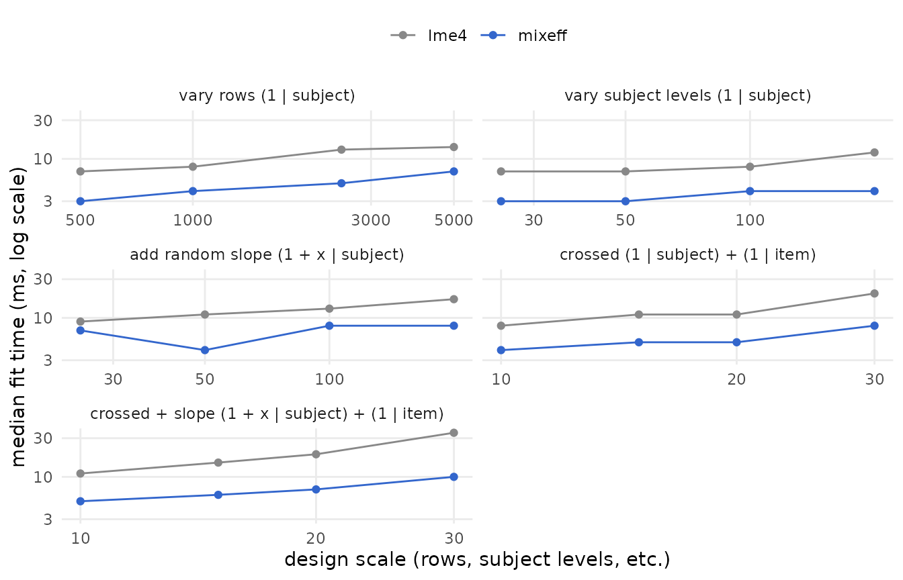
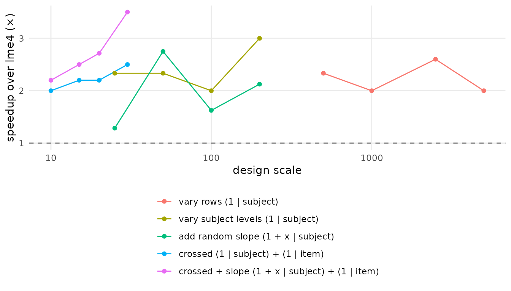
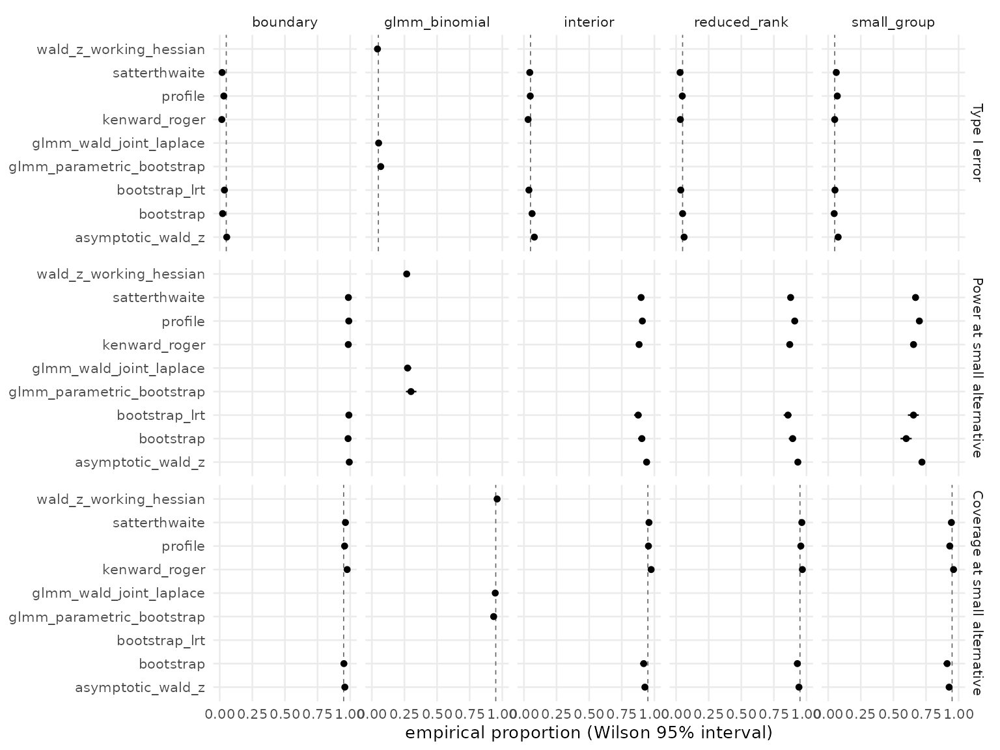

Speed matters most when a workflow repeats the same fit many times. Parametric bootstrap is the canonical case: a 1,000-replicate bootstrap means roughly 1,000 refits, plus the original fit and summary work. The same logic applies to cluster bootstrap, simulation studies, multi-seed reanalysis, and anything whose inner loop is “fit the same model again with new data”. A per-refit speedup multiplies by the replicate count.
On the LMM scaling benchmark shipped with the package,
mixeff ran 2.0 to 3.5 times faster than lme4
at the largest tested scale of each design (1.3 to 3.5 across the whole
grid). This vignette shows the figures from a single run of that
benchmark and then documents the harness used to make them. The numbers
are machine- and model-dependent — all of these fits complete in tens of
milliseconds — so the scripts also write CSV files that you can re-plot
and rerun on the designs you actually care about.
What does the benchmark show?
The benchmark sweeps five mixed-model designs — varying rows, varying
subject levels, adding random slopes, crossing subject and item, and
combining crossed grouping with a random slope — across a log-spaced
grid of scale values. At each cell, mixeff::lmm() and
lme4::lmer() fit the same model five times. The summary
table records median elapsed seconds and speedup over lme4
per cell. The shipped CSV comes from one run on 2026-07-30: macOS arm64
(M-series), R 4.5.1, mixeff 0.2.0 built with the release profile, engine
snapshot 4a2abb3. If any of those differ on your machine,
rerun the harness rather than reusing these numbers.
benchmark_path <- system.file(
"extdata", "lme4-scaling-summary.csv",
package = "mixeff"
)
benchmark <- read.csv(benchmark_path, stringsAsFactors = FALSE)
benchmark$scenario_label <- factor(
benchmark$scenario,
levels = c("rows", "groups", "slopes", "crossed", "crossed_slope"),
labels = c(
"vary rows (1 | subject)",
"vary subject levels (1 | subject)",
"add random slope (1 + x | subject)",
"crossed (1 | subject) + (1 | item)",
"crossed + slope (1 + x | subject) + (1 | item)"
)
)
head(benchmark[, c("scenario", "scale_value", "engine",
"median_sec", "speedup_vs_lme4")])
#> scenario scale_value engine median_sec speedup_vs_lme4
#> 1 crossed 10 lme4 0.008 1.0
#> 2 crossed 10 mixeff 0.004 2.0
#> 3 crossed 15 lme4 0.011 1.0
#> 4 crossed 15 mixeff 0.005 2.2
#> 5 crossed 20 lme4 0.011 1.0
#> 6 crossed 20 mixeff 0.005 2.2The first figure plots the median fit time against design scale, on
log-log axes, with one panel per scenario. mixeff runs
below lme4 everywhere on this grid. The largest speedup is
on the one design that combines crossed grouping with a random slope;
the other four designs do not order by structural complexity (the plain
grouped random intercept ranks second).
library(ggplot2)
ggplot(benchmark,
aes(scale_value, median_sec * 1000, colour = engine,
group = engine)) +
geom_line() +
geom_point() +
facet_wrap(~ scenario_label, scales = "free_x", ncol = 2) +
scale_x_log10() +
scale_y_log10() +
scale_colour_manual(values = c(lme4 = "#888888", mixeff = "#3366cc")) +
labs(
x = "design scale (rows, subject levels, etc.)",
y = "median fit time (ms, log scale)",
colour = NULL
) +
theme_minimal(base_size = 11) +
theme(legend.position = "top",
panel.grid.minor = element_blank())
The second figure folds the same data into one panel: the speedup of
mixeff over lme4 at each cell. The dashed
reference line at 1× would mean the two engines are equally fast.
mixeff_rows <- subset(benchmark, engine == "mixeff")
ggplot(mixeff_rows,
aes(scale_value, speedup_vs_lme4,
colour = scenario_label, group = scenario_label)) +
geom_hline(yintercept = 1, linetype = 2, colour = "grey50") +
geom_line() +
geom_point() +
scale_x_log10() +
scale_y_continuous(breaks = seq(0, 8, by = 1)) +
labs(
x = "design scale",
y = "speedup over lme4 (×)",
colour = NULL
) +
theme_minimal(base_size = 11) +
theme(legend.position = "bottom",
legend.direction = "vertical",
panel.grid.minor = element_blank()) +
guides(colour = guide_legend(ncol = 1))
Two caveats before reading the speedup figure. First, the absolute
timings run from about 3 ms to 35 ms and the recorded medians are whole
milliseconds, so timer resolution alone can move a ratio substantially —
one millisecond on the 4 ms side of a 12 ms / 4 ms cell moves the ratio
from 3.0 to 2.4 or 4.0; five replications per cell do little to smooth
that. Second, within a single design the speedup does not trend reliably
with scale. What the grid does support: mixeff ran faster
in every cell, and the single largest speedup is on the design combining
crossed grouping with a random slope.
What should you measure?
There are two separate speed questions.
First, measure model fitting. This asks how quickly each engine solves the same mixed model as the number of rows, groups, slopes, or crossed random effects changes.
Second, measure bootstrap routes. This asks how long the user-facing inference verbs take when they repeatedly refit models.
data.frame(
bootstrap_replicates = c(50L, 200L, 1000L),
approximate_refits = c(50L, 200L, 1000L)
)
#> bootstrap_replicates approximate_refits
#> 1 50 50
#> 2 200 200
#> 3 1000 1000The arithmetic is simple but it decides the workflow: per-refit speed
differences multiply by nsim.
How do you benchmark fitting?
Use the scaling benchmark when you want to compare
mixeff::lmm() with lme4::lmer() over several
synthetic LMM designs.
system2(
"Rscript",
c(
"inst/benchmarks/lme4-scaling.R",
"--reps=5",
"--scenarios=rows,groups,slopes,crossed",
"--no-plots"
)
)That script writes one row per engine, design, scale value, and
timing repetition, plus a summary table with median elapsed seconds and
speed relative to lme4.
data.frame(
file = c(
"benchmarks/lme4-scaling/lme4-scaling-raw.csv",
"benchmarks/lme4-scaling/lme4-scaling-summary.csv"
),
contents = c(
"one timing row per engine/design/repetition",
"median seconds, fits per second, and relative speed"
)
)
#> file
#> 1 benchmarks/lme4-scaling/lme4-scaling-raw.csv
#> 2 benchmarks/lme4-scaling/lme4-scaling-summary.csv
#> contents
#> 1 one timing row per engine/design/repetition
#> 2 median seconds, fits per second, and relative speedHow do you benchmark bootstrap?
Use the bootstrap benchmark when you want to time the bootstrap and simulation-based inference routes themselves.
The benchmark includes
test_effect(method = "bootstrap"),
confint(method = "bootstrap"),
compare(method = "bootstrap"), and
lme4::bootMer() as an R-engine baseline. If
pbkrtest is installed, it also times
pbkrtest::PBmodcomp().
data.frame(
route = c(
"mixeff_test_effect_bootstrap",
"mixeff_confint_bootstrap",
"mixeff_compare_bootstrap_lrt",
"lme4_bootMer_fixef_distribution",
"pbkrtest_PBmodcomp"
),
target = c(
"term-level fixed-effect p-value",
"fixed-effect confidence interval",
"model comparison p-value",
"fixed-effect bootstrap distribution",
"parametric bootstrap model comparison"
)
)
#> route target
#> 1 mixeff_test_effect_bootstrap term-level fixed-effect p-value
#> 2 mixeff_confint_bootstrap fixed-effect confidence interval
#> 3 mixeff_compare_bootstrap_lrt model comparison p-value
#> 4 lme4_bootMer_fixef_distribution fixed-effect bootstrap distribution
#> 5 pbkrtest_PBmodcomp parametric bootstrap model comparisonWhat does inference method choice cost?
Speed is only one part of the inference decision. The route table also needs calibration evidence: how often a method rejects under a null, how often it detects a small alternative, and whether interval routes cover that small alternative.
The shipped artifact is produced by the simulation study’s release mode: 2,500 replications per analytic route (Monte Carlo SE at a true 0.05 rate: about 0.0044), 500 per bootstrap route (about 0.0097), and 1,000 for the certified joint-Laplace GLMM route. Every rate below carries a Wilson 95% interval, and every cell records requested, evaluated, refused, failed, and boundary replicate counts — nothing is silently dropped. The study covers four Gaussian LMM regimes (interior, boundary, reduced-rank, small-group) and one binomial GLMM fixture with three routes (certified joint Wald, the opt-in working-Hessian approximation, and the parametric bootstrap). That is the scope of the claim: calibration evidence for these regimes, not a general guarantee — a broader condition matrix (crossed effects, rare events, overdispersion) is future work.
The artifact’s provenance (package commit, engine pin, lockfile checksum, exact invocation, seeds) ships next to it as a manifest:
locate_extdata <- function(file) {
path <- system.file("extdata", file, package = "mixeff")
if (nzchar(path)) return(path)
local_path <- file.path("inst", "extdata", file)
if (file.exists(local_path)) local_path else file.path("..", "..", local_path)
}
simulation <- read.csv(locate_extdata("inference-method-simulation-summary.csv"),
stringsAsFactors = FALSE)
manifest <- jsonlite::read_json(
locate_extdata("inference-method-simulation-manifest.json")
)
cat(sprintf(
"mode: %s | analytic reps: %d | bootstrap reps: %d | joint reps: %d\npackage %s @ %.9s | engine %.9s\nreproduce: %s\n",
manifest$mode, manifest$reps_analytic, manifest$reps_bootstrap,
manifest$reps_joint, manifest$package_version, manifest$package_commit,
manifest$rust_pin, manifest$invocation
))
#> mode: release | analytic reps: 2500 | bootstrap reps: 500 | joint reps: 1000
#> package 0.2.0 @ 596d93934 | engine f82c646e6
#> reproduce: Rscript inst/benchmarks/inference-method-simulation.R --mode=release --reps=2500 --reps-bootstrap=500 --reps-joint=1000 --nsim=199 --seed=2026The plot shows each route’s empirical rates with their Wilson
intervals. P-value routes contribute Type I error and power; interval
routes contribute coverage. Rates are conditional on a successful
evaluation; the CSV also carries unconditional versions (refusals and
failures counted against the route) and the full replicate accounting.
Routes that did not run carry an explicit reason —
“excluded in this mode” is machine-distinguishable from “not wired”.
library(ggplot2)
metric_frame <- function(d, value, lower, upper, label) {
out <- d[, c("method", "fixture", value, lower, upper)]
names(out) <- c("method", "fixture", "value", "lower", "upper")
out$metric <- label
out
}
simulation_long <- rbind(
metric_frame(ran, "type_I_error", "type_I_lower", "type_I_upper",
"Type I error"),
metric_frame(ran, "power_at_alt", "power_lower", "power_upper",
"Power at small alternative"),
metric_frame(ran, "coverage_at_alt", "coverage_lower", "coverage_upper",
"Coverage at small alternative")
)
simulation_long <- subset(simulation_long, is.finite(value))
simulation_long$metric <- factor(
simulation_long$metric,
levels = c("Type I error", "Power at small alternative",
"Coverage at small alternative")
)
nominal <- data.frame(
metric = factor(c("Type I error", "Coverage at small alternative"),
levels = levels(simulation_long$metric)),
y = c(0.05, 0.95)
)
ggplot(simulation_long, aes(method, value)) +
geom_hline(data = nominal, aes(yintercept = y), linetype = 2,
linewidth = 0.3, colour = "grey40") +
geom_pointrange(aes(ymin = lower, ymax = upper), linewidth = 0.4,
fatten = 1.5) +
facet_grid(metric ~ fixture) +
coord_flip(ylim = c(0, 1)) +
labs(x = NULL, y = "empirical proportion (Wilson 95% interval)") +
theme_minimal(base_size = 10) +
theme(panel.grid.minor = element_blank())
How do you read the result?
For a local speed claim, read the summary CSV and compute ratios from
elapsed seconds. Values above 1 mean the baseline route took longer than
the mixeff route.
summary <- read.csv("benchmarks/bootstrap-inference/bootstrap-inference-summary.csv")
mixeff_ci <- subset(summary, route == "mixeff_confint_bootstrap")
lme4_boot <- subset(summary, route == "lme4_bootMer_fixef_distribution")
data.frame(
comparison = "lme4 bootMer / mixeff bootstrap CI",
speedup = lme4_boot$median_sec / mixeff_ci$median_sec
)Treat that ratio as local evidence, not a universal constant. It
depends on the formula, optimizer, random-effects structure,
nsim, and machine. The point of the benchmark scripts is to
make the claim reproducible for the model class you are actually
fitting.
What should go in a report?
When you report benchmark results, include the model formula, number
of rows, number of grouping levels, random-effects structure,
nsim, repetitions, and the package versions. The raw CSV
has the timing rows; the summary CSV is for tables and figures.
data.frame(
field = c("formula", "nobs", "groups", "random_terms", "nsim", "reps", "versions"),
reason = c(
"defines the fixed and random structure being refit",
"controls the amount of data processed per fit",
"controls the random-effect dimension",
"controls covariance structure and optimizer work",
"controls bootstrap cost",
"shows timing stability",
"makes the run reproducible"
)
)
#> field reason
#> 1 formula defines the fixed and random structure being refit
#> 2 nobs controls the amount of data processed per fit
#> 3 groups controls the random-effect dimension
#> 4 random_terms controls covariance structure and optimizer work
#> 5 nsim controls bootstrap cost
#> 6 reps shows timing stability
#> 7 versions makes the run reproducible